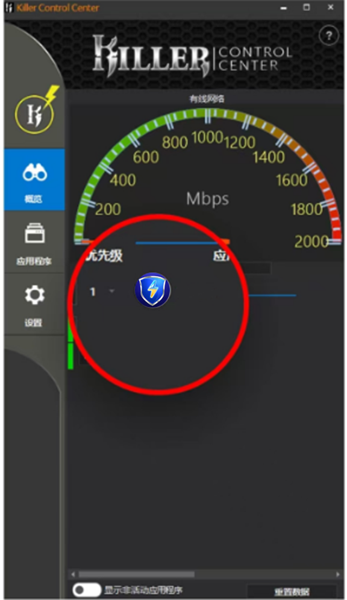
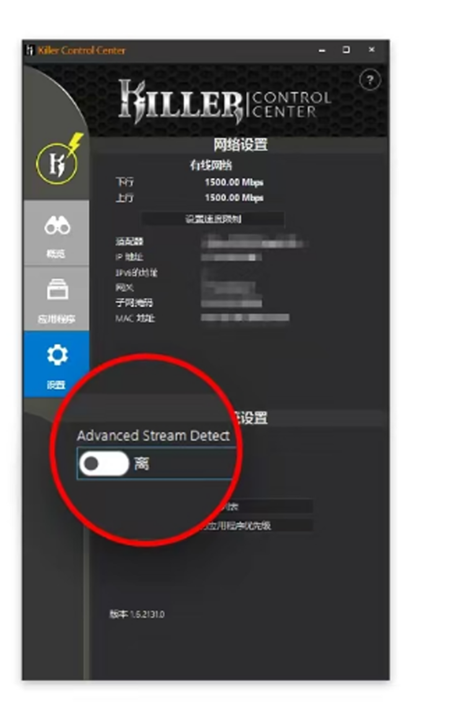

返回
欢迎查看常见问题
智慧服务，让您使用更简单

Killer 网卡需要进行特殊设置
若您使用的是 Killer 网卡，那么 赛盾VPN 需要您在 Killer Control Center 中做一些配置才能正常使用
如果您是MSI、外星人、DELL、Acer、雷蛇和Lenovo 品牌的电脑可能会因为 Killer 网卡设置的缘故出现无法访问网站的情况，可以通过下面两种方法让 赛盾VPN 正常使用，具体操作如下所示
第一种:
键盘按下 WIN+R,输入 Services.msc 打开服务列表，找到里面 Killer 开头服务，右键点击“属性”，把“启动类型"下拉菜单选择禁用，"服务状态"选择停用，点击确定，如下图所示。
第二种:
打开 Killer Control Center,将PrioritizationEngine 及 自动带宽分配关闭，然后将介面上方Intelligence Engine 、Prioritization Engine中的相关设置都关闭，如下图所示，
第三种:
在 Killer 网卡概览界面将 saidun.exe 的优先级调整为1，如下图所示。

第四种:
将 Killer 网卡系统设置中 Advanced StreamDetect 选项关闭，如下图所示

Killer 网卡的版本可能有所不同，下图为另一种Killer 网卡界面的设置方法
上述步都设置並確認完成后，您将赛盾软件完全退出在 重新打开连接，然后再重新访问下您喜欢的网站，看看是否都可以正常访问了?
注:若您在下载和使用过程中有任何问题，您随时可以发送邮件给 {{kfEmail}}，将由专业的客户服务人员帮助您获取到最新版本的软件。